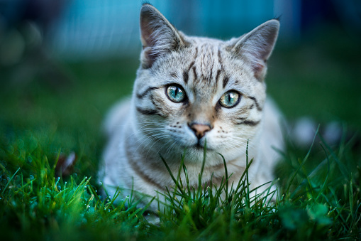
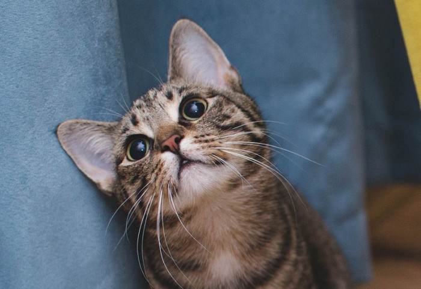
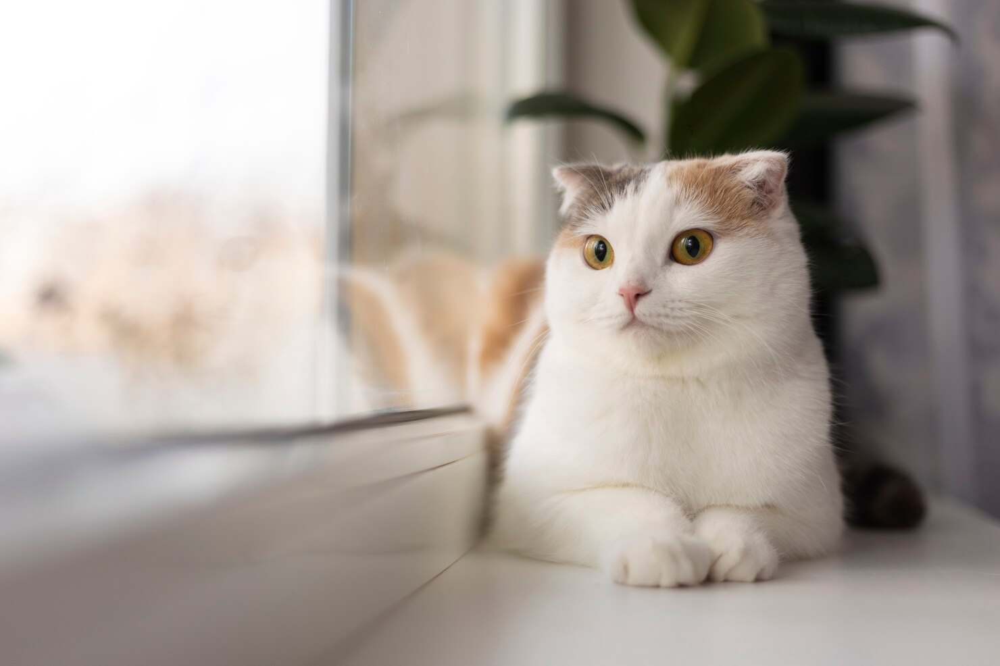
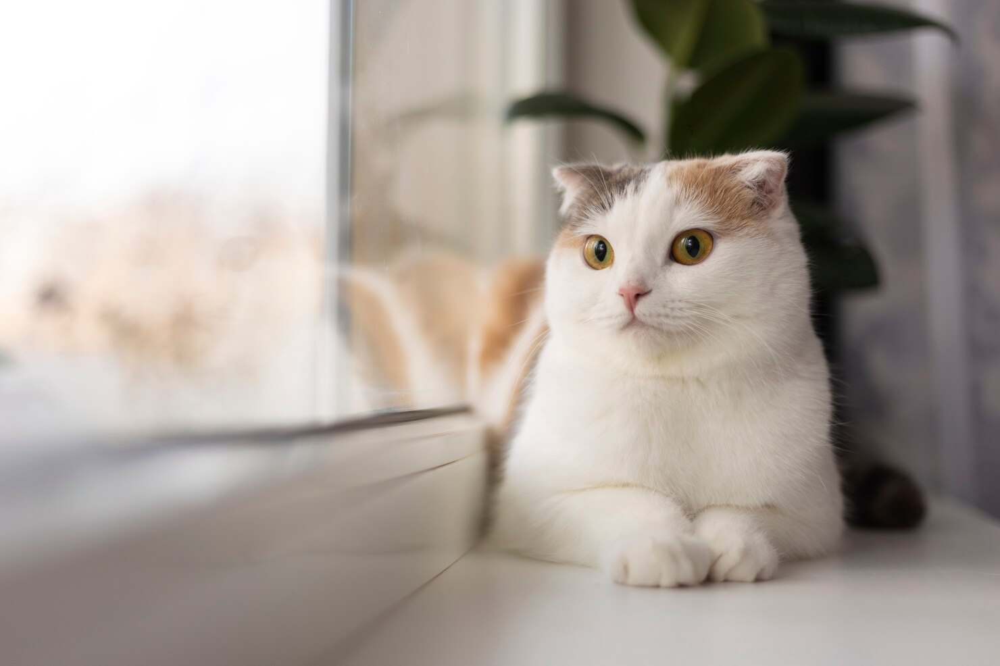

고양이(cat)는 식육목 고양이과 고양이속의 한 종(Felis catus)이다. 고양이의 신체적 특성과 습성은 다른 고양이과 동물들과 유사하게 빠른 반사신경, 탁월한 유연성, 날카로운 이빨, 넣고 꺼낼 수 있는 발톱 등이 있다. 매우 긴 수면 시간을 가지고 있어 하루 종일 자는 시간이 굉장히 많으나 기본적으로 야생에서는 포식자 동물이라는 특성 상 박명박모성(薄明薄暮性)으로, 해뜰녘과 해질녘에 주로 행동한다. 또한 여타 고양잇과 동물들과 같이 고양이는 육식동물로, 야생에 사는 들고양이는 쥐, 다람쥐, 작은 새 등을 사냥해 잡아먹는다. 한국에서는 사는 곳에 따라 들고양이, 길고양이, 집고양이 등으로 구분된다. 고양이는 19세기 후반 이후 인간에 의해 품종개량 되어 현재는 다양한 묘종이 있으며, 품종 등록을 관장하는 국제고양이협회(TICA)는 71개 묘종을 인정한다. 고양이는 다른 동물들보다 눈과 동공이 매우 크다. 그리고 세로 동공, 즉 '고양이 눈'은 해가 쨍쨍하게 비치는 밝은 장소로만 한정되며 집 안의 밝기 정도에서 크고 예쁜 눈을 유지한다. 옆에서 각을 주고 보면 유리구슬처럼 보이기도 한다. 눈꼬리가 위로 향해있어 요염한 느낌을 주기도 한다. 사람의 얼굴이 고양이를 닮은 것은 고양이상이라고 한다. 고양이의 두개골에는 포유류 중에서 체구 대비 가장 큰 안와(안구가 들어가는 구멍)가 있다. 눈만 큰 것이 아니라 코도 상당히 조그마하다. 그리고 발바닥엔 육구도 있다. 고양이의 평균 머리길이 5cm, 그리고 평균 몸길이 60cm이다. 고양잇과 전체로 따지면 고양이는 매우 소형에 속한다. 소형종으로 분류되는 삵이나 들고양이 등도 고양이보다는 크다. 중소형급인 서벌은 고양이보다 덩치가 2~3배 가까이 차이난다. 반면, 모래고양이나 붉은점살쾡이 등처럼 고양이보다 작게 자라는 고양잇과 동물도 있다. 무게는 소형은 3kg 미만, 중형은 3~5kg 정도이며, 대형은 5kg 이상이며, Substantial 체형으로 구분되는 품종은 10kg가 넘는 경우도 제법 많다. 랙돌 중 덩치가 큰 아이들이나 메인 쿤 같은 경우. 참고로 같은 식육목인 개와 비교했을때, 같은 체급에서 훨씬 커다랗게 보이는 데 이게 고양이 액체설의 근원이다. 같은 체구의 개와 육식동물로서의 비교를 하자면 대체로 개보다 치악력과 물어뜯는 힘은 약하지만 대신 이빨이 날카로워서 물리면 아프다. 그 이유는 고양잇과 동물은 이빨이 사냥감의 숨통을 끊는 데 특화되었기 때문에 굳이 치악력이 강할 필요는 없다. 게다가 고양이는 날카로운 발톱이 더 위협적이다. 고양이가 개보다 약하다고 방심하다가는 살에 구멍이 뚫리기 십상이다. 사냥을 할 때도 발톱을 우선적으로 사용하여 제압한 후 물어서 운반하는 편이다. 고양이는 위협을 받으면 일단 도주를 하지만 궁지에 몰리면 항복이라는 개념이 없기 때문에 동귀어진의 각오로 공격을 한다. 눈꺼풀이 두 겹으로 되어있어 속 눈꺼풀이 감기고 겉 눈꺼풀만 떴을 때는 무섭게 보일 수 있다. 특히 하품할 때 이런 경우가 가끔 있는데 쩍 벌린 입, 날카로운 이빨과 함께 심히 공포스러운 광경을 목격하게 된다. 몸의 털 색상은 하양, 검정, 회색, 노랑, 주황, 갈색등으로 다양하며 여러 색이 섞인 고양이도 많다. 대중적으로 생각하는 고양이의 털 색은 마멀레이드색 고양이. 이모지들도 고양이의 색이 대부분 마멀레이드 색상이다. 체구가 가장 큰 고양이는 메인쿤으로 일반 고양이를 생각했다가는 가히 놀랄 만한 크기를 자랑한다. 몸무게는 많으면 10kg에 달하며 체구가 굉장히 큰 개체는 최대 20kg까지 나가는 일도 있다. 한국과 다른 나라에선 흔하지 않지만 미국에서는 흔한 품종이다. 가끔 길에서도 나타나는데 새끼 고양이를 데려와 키우니 무럭무럭 자라 10kg을 넘는 경우도 있다. 일반적으로 몸무게는 5~7kg 정도이며, 특이하게 더 큰 경우도 있다. 메인 쿤 말고 롱 앤 섭스탠셜로 구분되는 랙돌이나 노르웨이숲 등등의 아이들도 큰 녀석들은 만만치 않다. 10킬로를 간단히 넘기는 녀석들도 종종 나온다. 아랫배에는 고양잇과 동물들 특유의 '원시 주머니(primordial pouch)'라는 처진 뱃살이 있다. 성묘라면 거의 다 가지고 있다. 살이 찐 것이라고 오해받는 때가 많고, 특히 국내에는 극소수 사람들을 제외하면 아직까지 거의 알려져 있지 않은 부위이다. 해외에서는 중성화를 하면 이 뱃살이 생긴다는 낭설이 있지만 이는 사실무근이고, 실제로는 거의 모든 고양이에게서 기본적으로 나타난다. 물론, 가끔 이게 없는 고양이도 있다. 이 뱃살의 기능으로 지금까지 밝혀진 것은, 우선 싸울 때 장기를 보호하고, 몸을 쭉 뻗을 때 쓰는 여분의 살로 기능하며, 그리고 이 부근에 먹이를 저장함으로써 음식을 듬뿍 먹을 수 있게 해 준다. 길고양이들에게 밥을 챙겨주면 무서울 정도로 많이 먹는 것을 볼 수 있는데, 이는 과식이 아니라 생존 본능이다. 먹이가 부족한 야생 환경에서는 언제 먹이를 또 먹을 수 있을지 모르기 때문이다. 고양이의 뒷발은 개를 비롯한 많은 육상동물들처럼 발가락이 4개밖에 없다. 뒷발가락이 5개인 동물은 의외로 많지 않다. 인간을 비롯한 영장류, 영장류와 가까운 편인 설치류, 고양이와 같은 식육목 중에서는 곰 종류 정도로 의외로 한정적이다. 따라서 고양이의 전체 발가락 수는 18개이다. 젖꼭지의 개수는 평균 6~8개이다. 대개 8개를 갖고 태어나지만 드물지 않게 6개를 갖고 태어나기도 하며, 이때 없는 한 쌍은 겨드랑이 쪽의 것들일 가능성이 크나, 다른 곳의 한 쌍이 없는 예도 있다. 때로는 하나만 더 있거나 없는 식으로 홀수 젖꼭지를 갖고 태어나는 개체도 있다. 그러나 6개이든 홀수이든 중요하지 않다. 기형이 아니며, 모두 곧잘 관찰되는 변이형에 불과하다. 고양이의 외모는 고양이의 중요한 생존전략이다. 그건 현대 사회에서 대부분의 고양이는 애완용으로만 길러지기 때문이다. 가슴에 폭 안길만한 사이즈와 아기처럼 동글동글한 몸과 이목구비가 인간의 공격성을 낮추고 호감을 불러일으키는데 큰 역할을 한다. 그 외에도 우울증 치료 효과가 있기도 한데, 이것 역시 고양이의 외모와 습성 덕분이다. 개도 노동력이 아닌 애완용 개들은 거의 모두 소형화,미형화로 귀여운 외모를 가지는 쪽으로 개량되었다. 운동신경이 대단하고, 다리 근육, 특히 속근이 잘 발달되어 있고 유연한 몸 때문에 엄청난 점프력을 자랑한다. 성체 고양이의 경우 2미터 높이의 담장도 점프해서 쉽게 올라가며 뛰어 내릴때 착지도 거의 완벽하게 한다. 균형도 아주 잘 잡으며, 작은 크기 치고 달리기 속도도 빠르다. 쥐나 새도 어렵지 않게 잡는다. 몸길이 최대 5배까지 점프할 수 있으며 인간으로 치면 무려 8m를 점프한다고 봐도 되는 어마무시한 점프력. 다만 2m가 넘게 점프하다가 다치는 경우도 있다. 꽤 높은곳에서 떨어져도 안전하게 낙법을 치는 고양이지만, 너무 높으면 고양이도 결국 다친다.
 
 
